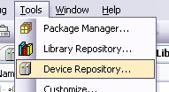
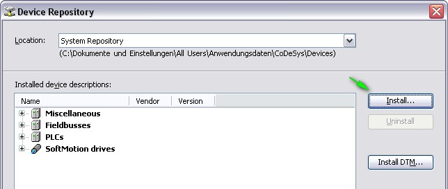
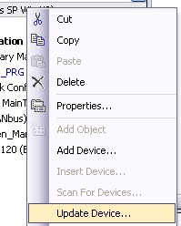
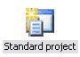
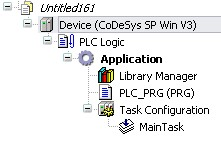
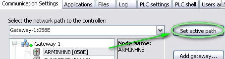
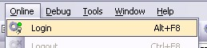
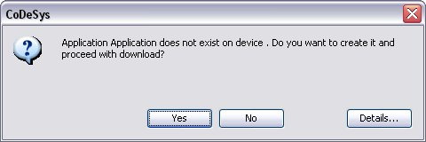
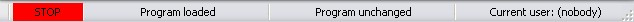

6.1.1.1. Quickstart¶
If you have a CODESYS Control runtime for Linux, please continue reading here: Runtime Toolkit Linux/QNX (SDK)
Getting the Binaries¶
Please have a look to the file Contents.txt in your Runtime Delivery. There might be a hint about the form of the delivery. In general we provide the following delivery forms:
- Starter Package:You will receive the binaries separately via FTP.
- Binary Delivery:The binaries for your platform are located in the platform specific “Bin” folder.e.g.: Files/Platforms/Windows/Bin
- Source Delivery:You need to compile the runtime by your own. Please refer to the runtime migration and adaptation guide in the “Documentation” folder of your delivery. This will explain in detail how to configure and compile your runtime.
Getting the Configuration¶
There are a few sample configurations placed in the „Configuration“ folder of your runtime delivery.
Please use the following for the different target platforms:
- VxWorks:Use the CODESYSControl_VxWorks.cfg from the „Configuration“ folder.
- Windows CE:Use the CODESYSControl_WinCE.cfg from the „Configuration“ folder.
CODESYS Control RTE: The cfg-file is installed by the setup.
Loading and Starting the Binaries¶
The procedure of loading and starting the runtime hardly depends on your platform. Here are the basic procedures for our standard platforms:
- VxWorks:Download the Binary with the debugger to the target or load it with the command „ld“ on the shell. Start the runtime with the command „PlcStart(char *pszFilename)“:-> ld 1, 0, „/tffs0/CDS.out“-> PlcStart „/tffs0/CODESYSControl.cfg“
- Windows CE:Copy „CODESYScontrolwince.exe“, your *.cfg file and the 3S.dat from the Configuration folder to your flash disk.
- CODESYS Control RTE:After setup the system can be started via the tray menu.
Change the VendorID¶
To identify the different kinds of targets in the network, we are using a combination of an ID for every customer (VendorID: 2 Bytes) and a target specific ID (also of 2 Bytes).
The default TargetID and VendorID of our runtimes are in the range of 3S. To customize this to your own VendorID, you need to load an own runtime component.
You can use the template „SysTargetOEM“ as a starting point. This should already set the correct VendorID and TargetID and define a new name for the target.
VxWorks 6.x:
Open the WindRiver workbench
Choose „Downloadable Kernel Module“
Select „Create project at external location“
Choose the path to the SysTargetOEM directory
Remove the default recursive build target and select only the *.c file.
Go to the project properties and add the build macro -DMIXED_LINK
Windows CE 4.2/5.0:
Open the EmbeddedVisualStudio
Create a new project for a WCE dynamic link library
Add the *.c file
Set the file path for additional header files for the runtime (components folder)
Windows CE6.0:
Open The MS Visual Studio 2005/2008
Create a new project for Smart Devices
Select a platform, set the application type to “DLL” and create an empty project
Add the *.c file
Set the file path for additional header files for the runtime (components folder)
CODESYS Control RTE:
The component SysTargetOEM is used to replace the target identification by an OEM specific one. It can be used directly from the toolkit folder “Platforms3SRTE3CmpDriver_ToolkitSysTarget_OverwriteExport”. In this case, the delivered 3s.dat file, contained in the toolkit folder “Configuration” just needs to be placed on the target in the subdirectory “lic” of the PLC’s root path.
The root path of the RTE is defined in a registry value “Path” in “HKEY_LOCAL_MACHINESOFTWARE3S-Smart Software Solutions GmbHCoDeSys SP3SRTE3”, visible in the RTE’s configuration dialog.
In case it is required to build SysTargetOEM from the delivered source code, Visual Studio 2010 or 2015 is required. In addition, place the WinDDK (downloadable from Microsoft, in the version 7600.16385.1) on your harddisk and point to it with an environment variable “WinDDK”, e.g. WinDDK=”C:WinDDK”.
Open the workspace CmpDriver from the \Platforms3SRTE3CmpDriver_Toolkit folder.
Copy the file targetdefines.h from the \Platforms3SRTE33SRTE3Sys folder to \TemplatesSysTargetOEM.
Compile the project SysTargetOEM, located in “Platforms3SRTE3CmpDriver_ToolkitSysTarget_Overwrite”.
Install the driver on the target using the registry file from \Platforms3SRTE3CmpDriver_ToolkitSysTarget_OverwriteRegistration on the target computer. Copy the .sys file to the \system32drivers folder of the target computer. On 64Bit systems, make sure the driver is codesigned after build, in case it was build from source. (The delivered binaries are codesigned.)
Add the SysTargetOEM component to the cfg file of the RTE (not the SysTargetOEM). Make sure the OverloadableFunctions=1 option is set in the ComponentManager section.
After starting the system, the RTE should be found in a network scan using the new vendor/device IDs.
To get active the component SysTargetOEM, you will need to add it to your *.cfg file. Just add it as a new component. Additionally to this, you need to specify the setting „OverloadableFunctions“ in the *.cfg file. So it will look somehow like this:
Create a Device Description¶
To configure a CODESYS project for your special device, you need to use a file called device description, which has the file ending *.devdesc.xml. In this file, you will define target information, such as:
Target Name, TargetID, VendorID, Supported I/O Devices, translations of Logger Texts, memory layout, …
In the directory „Templates/Devices“, you will find a few templates for several CPU platforms, which can be used as a starting point for your own device description. For every example we are offering some different Versions:
Without any prefix: The default device description without any special features.
Compact_*: Necessary for targets that are using CmpAppEmbedded, which implements a simpler download format. This download format performs better with small projects.
SoftMotion_*: These device descriptions define some default connectors, which are necessary for SoftMotion devices.
Just take the one which fits your target best as a starting point. In most cases the templates should already work for the first tests on your target. So it will be worth a try.
Note, that the templates are containing already your personal Vendor- and TargetID.
Note that the device description oft he RTE is shipped with CODESYS and is installed under the application data of all users in the Window’s standard folder, under \CODESYSDevices40960000 0002<version>. This file can be used as a template for your own device description.
Install the Device Description¶
To use your device description within your CODESYS project, you will need to install it first.
- Open the Device Repository:

- Install your Device Description:

Note: The device will be „inserted“ (or „copied“) into the project in which you are using it. So, if you make changes in the device description, you need one additional step after installing it before the changes will take effect:
- Update your device in the project:

Note: If you don’t enable the check box „Display all Versions“, devices with the same ID are always grouped together, and you will only see the one with the highest priority.
Create a Project¶
To test your new device, you should create a new, simple standard project:
Click on this symbol, to get a wizard:
Select the type „Standard Project“: 
Select your freshly installed Device Description from the drop down list and press OK.
The result should be an empty project, with one task and a POU called „PLC_PRG“, which will be your task entry:
Scan for the Target¶
Double click on „Device“ within your device tree. This should open a dialog, called „Communication Settings“. This dialog can be used to connect the device in your project with your physical device. If your device is connected to the network and you press „Scan network“ in this dialog, your should see your device after a short time.
If not, check the following:
- Change the „Filter“ from „Target ID“ to „None“.If your device appears then, you still have a wrong TargetID. Maybe your SysTargetOEM component was not correctly loaded!?Click on the device in the tree to see it’s configuration on the right side of the dialog.
- Is your device connected to your network?The default way to communicate with your device is UDP. If are using this connection method, your device needs to be in the same subnet as your host. Both devices need to have the exactly same network masked configured. Otherwise it will not work.You can check the network settings in the output of the runtime at startup. You should see s.th. like this:1287759127: Cmp=CmpBlkDrvUdp, Class=1, Error=0, Info=6, pszInfo= Network interface: <ipaddress>192.168.101.41</ipaddress> <subnetmask>255.255.252.0</subnetmask>
Login to the Target¶
If you found your device in the scan dialog above, you can login and try your first download. Every PLC in your device tree has a scan dialog, which was described in section 1.8. That’s necessary, because you will use this dialog to create a connection between the PLC in your device tree and the physical device.
So, select your target and login:
- Select your target in the scan dialog:

- Login to your target:

CODESYS tries to authenticate itself on that target and tries to get a „communication channel“. After a few seconds, you should get a response to acknowledge the download of the application. Most likely you will see this window, because you have no bootproject on your PLC, yet:

- You will see the status of the download in the status bar of CODESYS:
- After the download, your program will be in stop mode:
